A gentle, source-linked guide
Signals, with room for uncertainty
Observation can support a conversation. It cannot replace a hormone test.
Light changes are a pulse signal
The experimental camera tool looks at fingertip light fluctuations to estimate pulse timing. It does not measure estradiol, progesterone, LH or FSH.
A pattern is not proof
A change in resting pulse can have many causes. Ovuluna has no validated hormone phase-locking model and no clinical accuracy study establishing a personal phase from this signal.
Keep real observations together
Record waking temperature, urine-test brand and result, symptoms and dated lab results separately. Compare them with your clinician rather than converting them into a single certainty score.